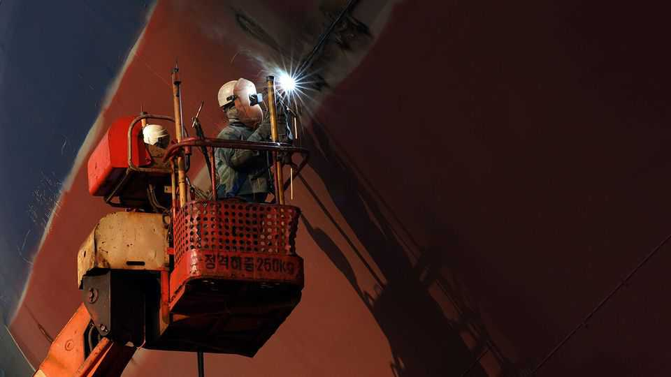

Worries about migrants imperil South Korea’s shipbuilding boom
Compared with most rich countries, the foreign workforce is still small
June 4th 2026

“THERE’S NO WORK back home,” says Wichit, a welder from Thailand. In Ulsan, a city in south-eastern South Korea, he’s found plenty. He works for HD Hyundai Heavy Industries (HHI), a South Korean shipbuilder. Migrants such as Wichit are helping companies like HHI fulfil a boom in orders from foreign buyers for liquefied-natural-gas carriers and fuel-efficient container ships. Now their presence is making waves.
In 2025 South Korean shipbuilders took 21% of all global orders, the largest share after China, according to Clarksons, a British maritime-research firm. The government has recently offered to share the country’s know-how to help Donald Trump “Make American Shipbuilding Great Again”. Last year it pledged to invest $150bn in shipbuilding projects in America as part of its effort to wriggle out of tariffs.
Yet the yards face a big staffing problem. South Korea’s population is one of the world’s fastest-ageing. Many of the workers who powered the industry through a previous boom in the 2000s have retired or moved into management. Young South Koreans see shipbuilding as dangerous, laborious and low-paying: the fatality rate at shipyards is four times higher than in the average industrial workplace. So they have left shipbuilding regions in droves. In Ulsan only 24% of adults are under the age of 40. That has decreased by six percentage points in a decade.
Instead, shipbuilders have courted workers from countries such as Indonesia, Sri Lanka, Thailand and Vietnam. These days close to a quarter of the shipbuilding workforce is foreign—four times the share ten years ago. The government has encouraged this through changes to visa rules for skilled workers passed in 2022.
While shipbuilding bosses welcome the new arrivals, locals in places such as Ulsan are feeling miffed. Boom times for the maritime industry used to be good for many smaller businesses in coastal communities, says Lee Soo-won, an estate agent in Ulsan. Eateries near HHI always filled up when shifts finished. That is no longer so true. The migrant workers “barely spend and hardly eat out”, says Ms Lee.
Many of them have to pay thousands of dollars to brokers who help them secure their visas, saddling them with debt before they even enter the country. They are also inclined to send much of their income home, rather than splash out in seaside towns. Wichit says that each month he sends 30,000 baht ($920) back to his family in Pattaya, his home in Thailand. That is roughly two-fifths of what he makes.
Locals’ grievances are becoming more difficult to ignore. Recently Lee Jae Myung, the president, appeared to criticise shipbuilders’ hiring and pay practices. Under pressure, the companies have started talking about giving contractors bonuses. They are promising to do more to help migrant workers move their families to South Korea (with the idea that this would reduce their desire to send money out of the country). Shipbuilding bosses have also started to make noises about reducing the overall size of their foreign workforces. Yet there is only so much they can do to tempt young South Koreans back. ■
For exclusive coverage of Asian politics, economics and security, sign up to Asia Bulletin, our weekly subscriber-only newsletter.